Vyberte kapsli
Gelato, sorbet, nebo frozen yogurt. Kapsle čekají zmražené v mrazáku vedle stroje, každá je jedna porce 160 ml.
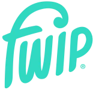
pro provozovny Chci ceníkPřipraveno pro vás
Pro kavárny, hotely, bistra a areály
Vložíte kapsli, zmáčknete tlačítko a podáváte. Bez vitríny, bez sanitace a bez jediné vyhozené porce. Zvládne to kdokoli z obsluhy.
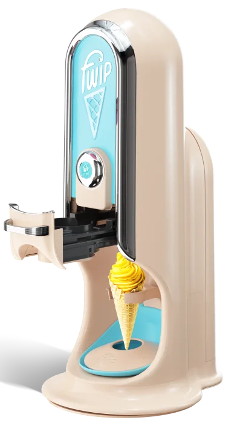
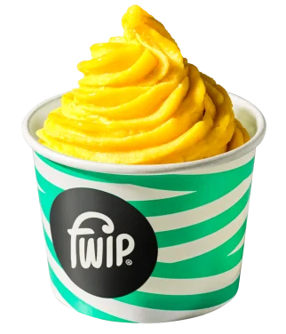
Proč zmrzlinu dnes neprodáváte
Klasická zmrzlina
Jak to funguje
Gelato, sorbet, nebo frozen yogurt. Kapsle čekají zmražené v mrazáku vedle stroje, každá je jedna porce 160 ml.
Šuplík, kapsle, tlačítko. Stroj porci vytlačí přímo do kelímku nebo kornoutu ve správné konzistenci.
Za sedm vteřin je hotovo. Prázdná kapsle jde do koše na recyklaci a stroj je připravený na další porci.
Kalkulačka
Posuňte jezdci podle svého provozu. Výsledek je orientační, přesná čísla dostanete v nabídce pro váš podnik.
Hrubý zisk za měsíc
0Kč
Bez DPH a bez ceny stroje. Podmínky koupě nebo pronájmu pošleme v nabídce.
Proč FWIP
Stroj velikosti kávovaru a mrazák na 144 kapslí. Vejde se na bar i na recepci.
↗Jedna kapsle je jedna porce. Co se neprodá, zůstane zmražené na další den.
↗Každá kapsle je zvlášť zabalená s hygienickou pečetí. Žádné nádoby ani vitrína.
↗Brigádník, recepční i pokladní. Každá porce stejně krásná, žádné kopečkování.
↗Víte, kolik vás porce stojí, a můžete ji přesně nacenit. Žádné odhady podle váhy.
↗Sorbety bez mléka, bez umělých barviv a aromat. Pro každého hosta.
↗Příchutě
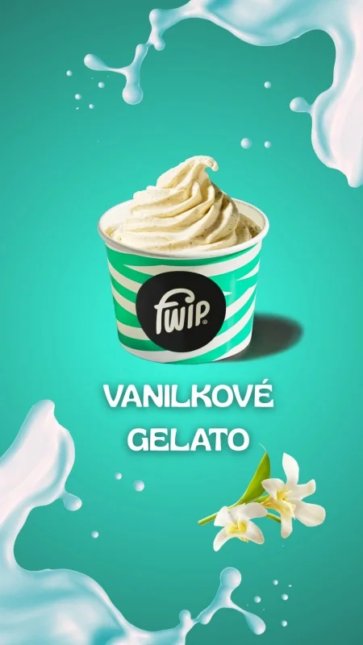
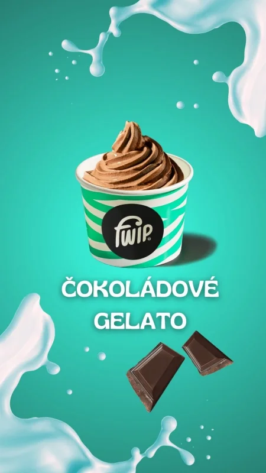
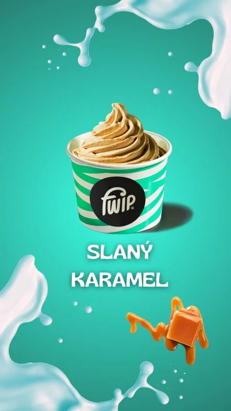
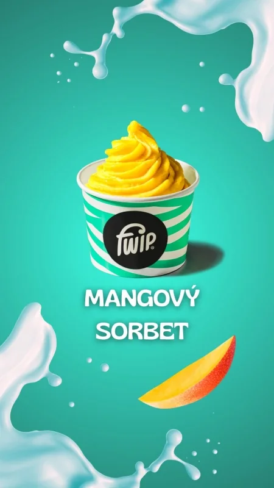
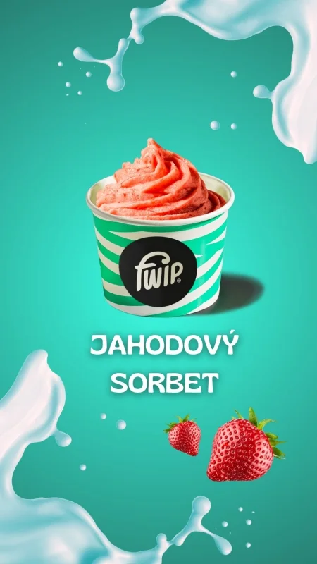
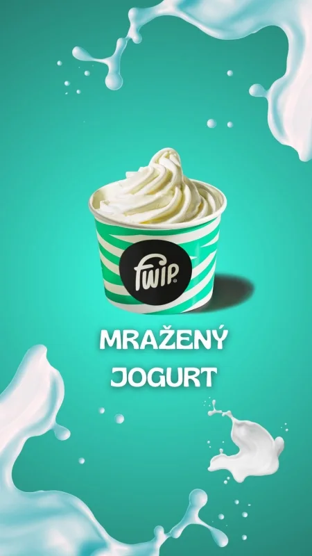
V Česku a na Slovensku už FWIP podávají
Sestavy
Prodejní místo s menu, mrazákem a reklamní A-cedulí. Pro aquaparky, kina a areály.
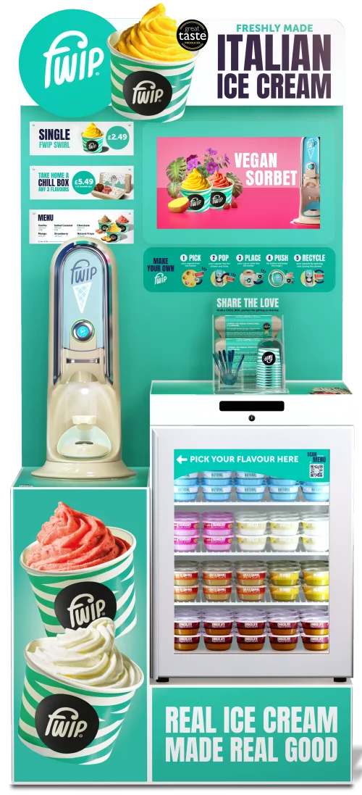
Stroj usazený na mrazáku, 103 × 58 × 45 cm.
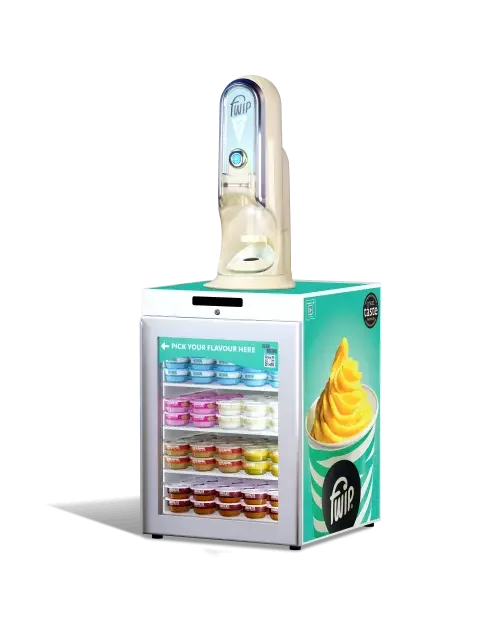
Na pojízdném stolku s brzdou. K bazénu, na zahrádku i na svatbu.
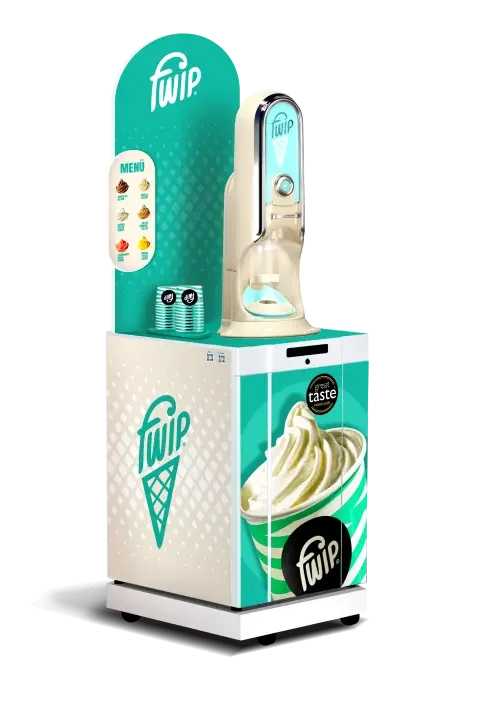
Stroj velikosti kávovaru, mrazák pod pultem a zmrzlina celý rok.
Vybrat sestavu pro můj podnikČasté otázky
Nenašli jste odpověď? Napište nám, ozveme se do jednoho pracovního dne.
Stroj je velký asi jako pákový kávovar. Mrazák na 144 kapslí může stát pod pultem nebo pod strojem jako Mikro jednotka (103 × 58 × 45 cm).
Ano. V kapsli je hotové gelato, sorbet nebo frozen yogurt, stroj ho jen vytlačí do správné konzistence. Příchutě získaly ocenění Great Taste.
Každá kapsle je zvlášť zabalená s hygienickou pečetí. Stačí krátké denní čištění bez složité sanitace, žádná vitrína ani nádoby na zmrzlinu.
FWIP neprodává balené nanuky, ale čerstvě podávané gelato do kelímku nebo kornoutu za cenu porce z cukrárny. Obojí může fungovat vedle sebe.
Kapsle vydrží zmražené, takže nic nevyhodíte. Objednáváte jen tolik, kolik opravdu prodáte.
Po potvrzení objednávky domluvíme dovoz a krátké předvedení obsluze. Příchutě pak objednáváte u distributora, se kterým vás propojíme.
Ceník a ukázka
Ceník, podmínky koupě nebo pronájmu a návrh sestavy podle vašeho provozu. Do jednoho pracovního dne.